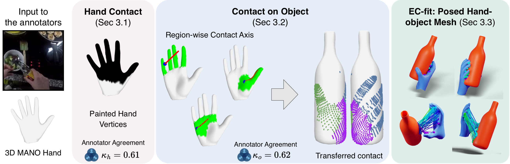
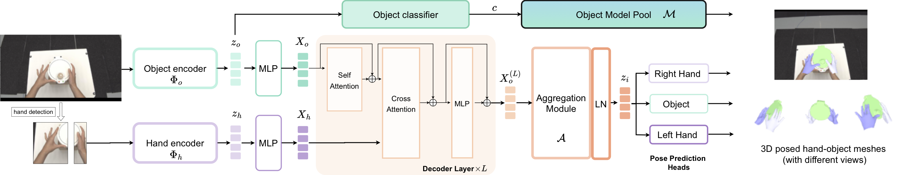

We tackle 3D hand–object pose estimation in unconstrained, cluttered, occluded egocentric video. We contribute EPIC-Contact, an in-the-wild dataset with dense 3D hand–object contact, and HOPformer, a transformer that conditions object pose on strong hand priors to predict both hands and the object in a single forward pass.
Drag to reveal the annotated 3D hand–object mesh, projected into a EPIC-Contact frame. The panel rotates the posed hand-object meshes.EPIC-Contact: 3D hands and objects, in the wild. Every tile is an egocentric clip from EPIC-Kitchens, overlaid with the 3D hand (blue) and object (orange) meshes from our dataset, annotated for each frame of the clip. EPIC-Contact spans thousands of clips across nine everyday objects in cluttered kitchens with natural occlusion.
Paper overview
Learning hand-object pose beyond the lab
3D ground truth for hand–object interaction has, to date, relied on expensive motion capture in uncluttered lab studios, so learning-based methods struggle to generalise to everyday video. We close both sides of that gap: scalable in-the-wild supervision through dense contact, and a model that uses the hand to reason about the object.
01
EPIC-Contact dataset
An in-the-wild egocentric dataset of ~2.3K clips and 62.3K frames built from EPIC-Kitchens, with dense, bijective 3D hand–object contact correspondences and posed meshes. Contact-guided annotation makes 3D supervision possible without a motion-capture studio.
02
HOPformer model
An end-to-end transformer that jointly predicts bi-manual hand pose, object pose, and object class from one RGB image in a single forward pass. A cross-attention decoder conditions object features on strong, pose-specialised hand priors.
2.3K
egocentric clips
62.3K
annotated frames
9
object categories
82.4%
ARCTIC SR@0.05
Interactive explorer
Explore the dataset, sample by sample
Browse selected EPIC-Contact samples: hand contact, transferred object contact, camera-space projections, and fitted 3D geometry, all rendered live in your browser.
Loading samples...
Active sample
Choose a sample
Select a row to begin.
RGB frame
Live camera-space evidenceRGB + hand-object mesh
No sample selected
Camera-space projection
The hand-object mesh is projected directly from camera-space geometry.
Contribution 01 · EPIC-Contact dataset
In-the-wild 3D supervision from contact
Training and evaluating hand–object reconstruction needs images paired with 3D hand and object pose. We collect EPIC-Contact from EPIC-Kitchens stable-grasp clips, annotating dense bijective 3D hand–object contact and turning it into posed 3D meshes, without any motion-capture rig.

Annotation pipeline. Annotators (1) paint contact on a subdivided 3,106-vertex MANO hand from a grasp clip; (2) transfer it to the object with region-wise 2-DoF contact axes (at most six clicks), yielding bijective hand–object correspondences; and (3) fit posed hand and object meshes with EC-fit. Inter-annotator agreement is κh = 0.61 (hand) and κo = 0.62 (object).
A
Annotation
Manually annotated contact, not MoCap
1
Paint hand contact
Label fine-grained contact on a subdivided MANO hand while watching a stable-grasp clip, including regions occluded in the egocentric view.
2
Transfer to the object
Region-wise 2-DoF contact axes (thumb, fingers, palm) map contact onto the object in ≤6 clicks, preserving bijective correspondences. A VLM estimates multi-DoF object scale (0.94 cm MAE).
3
Fit with EC-fit
Multi-initialisation optimisation with a contact loss, occlusion-aware mask loss, and penetration loss yields posed meshes; clip-level poses propagate via WiLoR hand motion.
B
What makes it hard
Real kitchens, real clutter
EPIC-Contact spans cluttered backgrounds and natural interactions where objects are small, transparent, or heavily occluded. These conditions are absent from constrained lab capture. It is, to our knowledge, the first in-the-wild egocentric dataset pairing diverse interactions with posed 3D hand–object meshes and dense contact.
2.3K
stable-grasp clips
62.3K
annotated frames
9
object categories
bijective
hand↔object contact
Pan · 492 clips
Dataset composition. 2,272 stable-grasp clips across nine object categories. Pick a category to inspect a representative reconstructed hand-object mesh and its frame.
Contribution 02 · HOPformer
Hand priors that condition the object
Learning-based 3D hand reconstruction is now strong and robust to occlusion, but joint hand–object methods lag behind. HOPformer's key idea is to inject specialised hand priors into object features, so the estimate of one informs the other, all in a single forward pass (~107 ms/frame, orders faster than optimisation).

HOPformer overview. Generic DINOv2 (ViT-G) object tokens are conditioned on pose-specialised WiLoR hand tokens through a 12-layer decoder. Each layer applies self-attention, hand-object cross-attention, and a feed-forward network; an aggregation module then routes the interaction features to dedicated heads for both hands and the object.
→
Architecture
Cross-attention decoder
Object queries iteratively attend to hand context across 12 decoder layers, progressively modulating object features by the hand's pose. A residual connection and learned aggregation module produce interaction features that improve both hand and object estimates under occlusion.
RGB image→Object + hand encoders→Hand-conditioned decoder→Hands + object pose
→
Output
Pose, class & retrieval
Dedicated heads regress bi-manual MANO pose and object pose (6D rotation, translation, and articulation). To avoid requiring object geometry as input, a classification head predicts the object category and retrieves its mesh from a model pool.
Training combines per-hand and object losses (2D/3D, pose, shape, camera, class) with a contact-based interaction loss that encourages physically consistent hand–object contact.
Reported benchmark snapshot
Strong gains in the lab and in the wild
Against the closest learning-based baselines, ArcticNet-SF and JointTransformer (the current ARCTIC reconstruction state of the art), HOPformer improves contact consistency, hand accuracy, motion, and object pose, in the lab and in the wild.
82.4%ARCTIC SR@0.05, +6.2 points over the prior state of the art
20.7 mmEPIC-Contact contact deviation, best reported
69.7%EPIC-Contact SR@0.1, up from 56.9%
EPIC-Contact · egocentric, in-the-wild
Method
CDev ↓
MRRPEro ↓
MDev ↓
ACCh/o ↓
MPJPE ↓
SR@0.05 ↑
SR@0.1 ↑
ArcticNet-SF
94.2
166.7
70.1
3.9 / 5.3
44.8
16.5
55.9
JointTransformer
30.1
78.6
20.0
3.1 / 9.5
22.9
17.6
56.9
HOPformer
20.7 −9.4
65.8 −12.8
11.4 −8.6
2.5 / 4.1
19.9 −3.0
29.8 +12.2
69.7 +12.8
Highlighted row is HOPformer. ± shows the gain over the strongest prior method (JointTransformer). HOPformer leads every metric.
ARCTIC · egocentric, in-lab
Method
CDev ↓
MRRPErl/ro ↓
MDev ↓
ACCh/o ↓
MPJPE ↓
AAE ↓
SR@0.05 ↑
ArcticNet-SF
44.1
33.9 / 36.8
11.8
6.3 / 11.3
22.9
8.0
59.0
JointTransformer
35.0
34.0 / 29.9
10.4
6.9 / 10.1
20.0
4.9
76.2
HOPformer
31.9 −3.1
31.1 / 29.4
7.3 −3.1
4.8 / 6.2
16.1 −3.9
5.0
82.4 +6.2
Highlighted row is HOPformer. ± shows the gain over the strongest prior method; underline marks the best value where a baseline leads (AAE).
Citation
Cite this work
BibTeX
@inproceedings{bansal2026hopformer,
title = {Towards in-the-wild Egocentric 3D Hand-Object Pose Estimation},
author = {Bansal, Siddhant and Zhu, Zhifan and Tripathi, Shashank and
Zhao, Jiahe and Black, Michael J. and Damen, Dima},
booktitle = {European Conference on Computer Vision (ECCV)},
year = {2026}
}